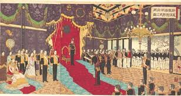
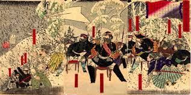
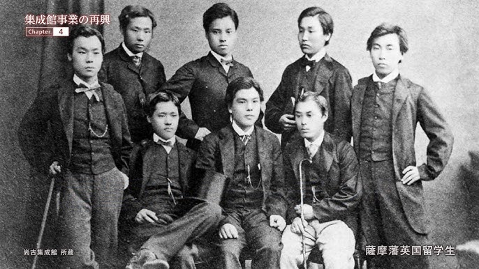
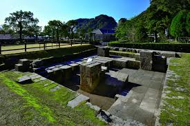

鹿児島県は、日本の歴史において非常に重要な役割を果たしてきました。ここでは、鹿児島の豊かな歴史の中から、特に重要な5つのポイントをご紹介します。
1. 薩摩藩の成立と発展
鹿児島はかつて薩摩藩として知られ、中世から近世にかけて島津氏が支配しました。島津氏は琉球王国（現在の沖縄）とも密接な関係を持ち、独自の文化と経済圏を築き上げました。江戸時代には徳川幕府から半独立的な地位を保ち、特に貿易を通じて力を蓄えました。
2. 明治維新と薩摩の役割
幕末には、薩摩藩は長州藩とともに倒幕運動の中心となり、日本の近代化の礎を築きました。西郷隆盛、大久保利通、小松帯刀といった多くの傑出した人物を輩出し、彼らは明治政府の要職に就き、日本の近代化を強力に推進しました。
3. 西南戦争
明治維新後、不平士族の反乱として起きた西南戦争（1877年）は、西郷隆盛を盟主とする旧薩摩士族と明治政府軍との間で戦われました。この戦争は日本の内乱の最後にして最大のものであり、西郷隆盛の死とともに終結し、武士の時代が完全に終わりを告げたことを象徴する出来事となりました。
4. 近代日本の産業化への貢献
薩摩藩は、幕末から明治初期にかけて、集成館事業に代表されるような西洋技術の導入に積極的でした。製鉄、造船、紡績などの近代産業をいち早く導入し、日本の産業革命を牽引する役割を果たしました。これは日本の近代化の基礎を築く上で不可欠でした。
5. ユニークな文化遺産
鹿児島には、その歴史を物語る多くの文化遺産が残っています。世界遺産に登録されている「明治日本の産業革命遺産」の構成資産である旧集成館（仙巌園を含む）や、西郷隆盛ゆかりの地など、歴史的建造物や史跡が多数存在し、鹿児島の独自の文化と歴史を今に伝えています。